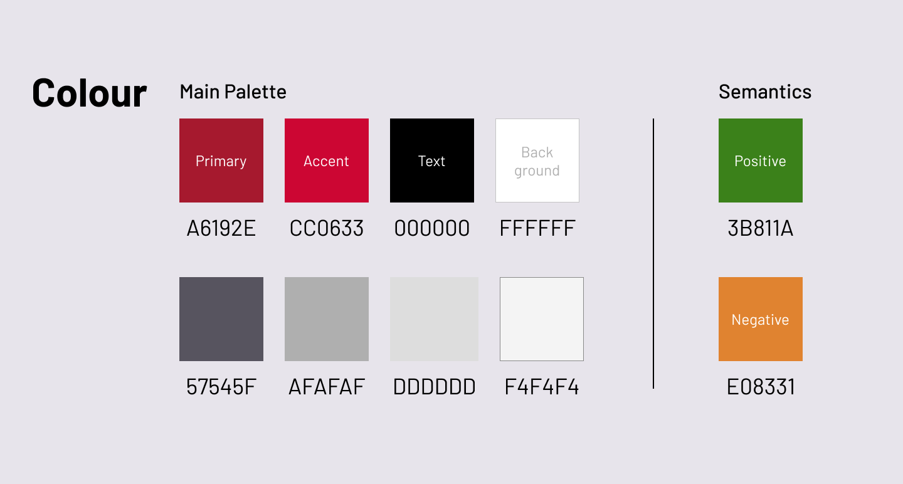
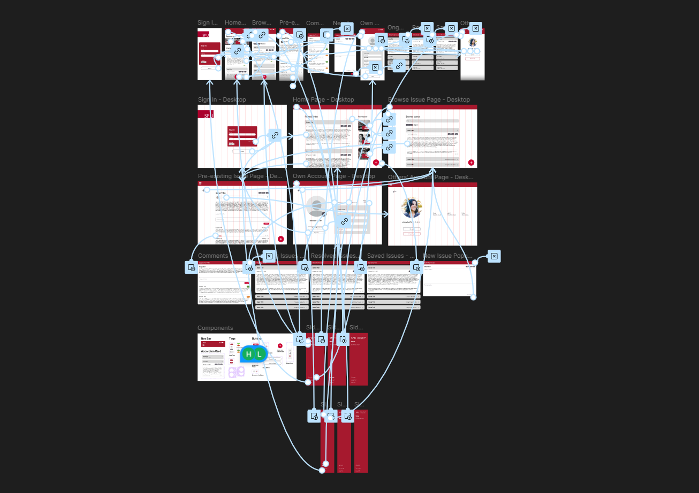

SIAT Issue Hub
Interactive Website Implementation Link
As our final for IAT 235, over the span of two months, I, alongside groupmates Anaka, Salena, and Helen, developed a responsive website and app prototype that allows SFU students to submit issues relating to academics and campus life, propose solutions, and evaluate ideas collaboratively using pros and cons. Using Figma for wireframing and designing, and HTML, CSS, and GitHub for implementation, we focused on creating a minimalistic user experience with a clear information hierarchy. I took the role of lead programmer for the project, taking our Figma designs and turning them into a live website using HTML, CSS, and Javascript. However, with the linear nature of the project I also helped in designing our wireframes and Figma interactive prototype.
The Problem
SFU campus life often feels quite disjointed: on the Surrey campus especially, being a commuter campus, there is no centralized channel for students to connect and share any issues, feedback, and potential solutions. Existing feedback methods are often one-way, such as surveys, or fragmented, such as social media channels. For students, this can often make their voice feel unheard.
Our goal was to create a collaborative environment where students could identify issues, propose solutions, and evaluate others' ideas using a pro/con system to ensure high-quality proposals.
Design Strategy
We adopted a minimalist approach to the design, referring to SFU's Brand Guidelines to build a sense of trust and officiality in our users. We utilised a monochromatic colour scheme with two key shades of red, as well as a series of grayscale tones. We introduced a yellow and green tone for use in the pros and cons section to strengthen the clarity of our signifiers.

Our colour palette for the project.
Prototyping
We created an interactive Figma prototype for our initial designs and had multiple chances to receive feedback and iterate apon them. This process was essential to reduce the cognitive load of users, clarifying our visual hierarchy using font weight and indentation to create clearer links between information and making features such as our 'Comments' section more distinct from our 'Proposed Issues' section.

Our Figma interactive prototype.
Implementation
The process of moving our designs from our Figma prototype to a published GitHub repository proved to be quite challenging, as no one in the group had previously used GitHub: repository architecture and merge conflicts provided quite the learning curve for all of us. I took a lead role in the process of resolving these issues, helping to manage our branching strategy and going through merge conflicts to make sure everyone's work was implemented. Throughout the entire process, our team synergy was clear and effective, which helped us quickly work through each of the issues. This synergy meant that we were each able to provide and receive real-time feedback, catching any small mistakes and ensuring high quality overall.
I led the process of taking our designs from prototype to reality, ensuring assets such as our up/downvote system and expandable dropdown menus felt responsive and functioned properly. We programmed using a "Mobile-First" approach, ensuring that our hierarchy remained clear and readable on all screen sizes

Our final issue hub home page.
Outcomes and Takeaways
Our final submission gives students a place to collaborate and share their opinions on campus issues. We received a grade of 100% on the project for our attention to detail and adherance to professional design standards. This project highlights how strategic use of minimalism, hierarchy, and branding can create a clear and engaging user experience. The project's success came from treating student feedback not just as a comment section but as a data problem. We didn't just give students a place to talk, we gave them a place to solve.